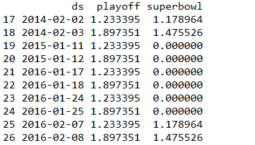
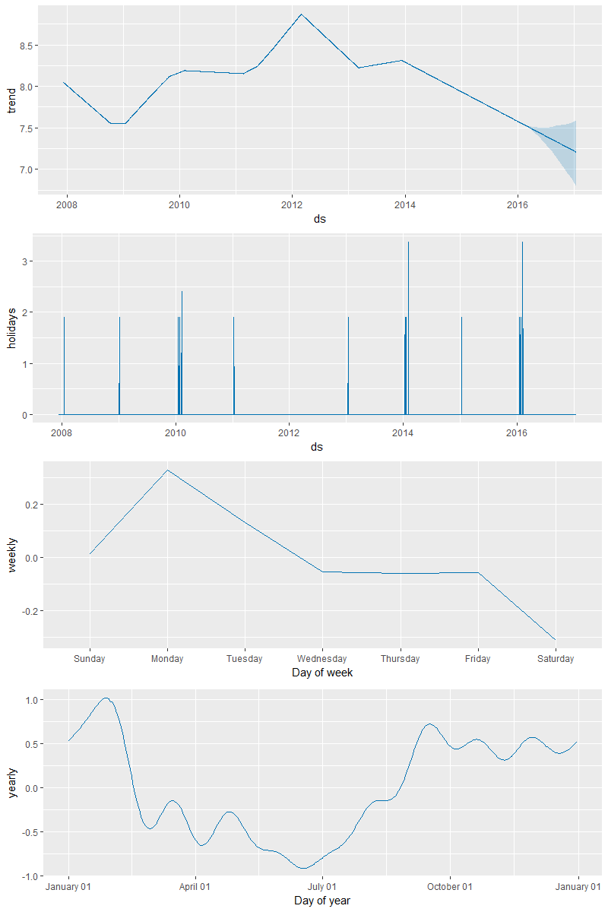
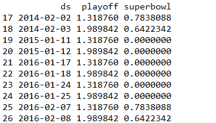

本使用说明教程主要翻译整理自 Prophet 的官方说明文档之 “节假日效应”
教程中使用的数据集可在 Prophet 的 github 主页 中的 examples 文件夹 内下载得到。
对节假日建模
如果需要专门对节假日进行建模，你就必须得为此创建一个新的数据框，其中包含两列（节假日 holiday 和日期戳 ds ），每行分别记录了每个出现的节假日。这个数据框必须包含所有出现的节假日，不仅是历史数据集中还是待预测的时期中的。如果这些节假日并没有在待预测的时期中被注明， Prophet 也会利用历史数据对它们建模，但预测未来时却不会使用这些模型来预测。
你可以在这个数据框基础上再新建两列 lower_window 和 upper_window ，从而将节假日的时间扩展成一个区间 [ lower_window , upper_window ] 。举例来说，如果想将平安夜也加入到 “圣诞节” 里，就设置 lower_window = -1 , upper_window = 0 ;如果想将黑色星期五加入到 “感恩节” 里，就设置 lower_window = 0 , upper_window = 1 。
下面我们创建一个数据框，其中包含了所有佩顿 · 曼宁参加过的决赛日期：
1 2 3 4 5 6 7 8 9 10 11 12 13 14 15 16 17 18
| playoffs = pd.DataFrame({ 'holiday': 'playoff', 'ds': pd.to_datetime(['2008-01-13', '2009-01-03', '2010-01-16', '2010-01-24', '2010-02-07', '2011-01-08', '2013-01-12', '2014-01-12', '2014-01-19', '2014-02-02', '2015-01-11', '2016-01-17', '2016-01-24', '2016-02-07']), 'lower_window': 0, 'upper_window': 1, }) superbowls = pd.DataFrame({ 'holiday': 'superbowl', 'ds': pd.to_datetime(['2010-02-07', '2014-02-02', '2016-02-07']), 'lower_window': 0, 'upper_window': 1, }) holidays = pd.concat((playoffs, superbowls))
|
1 2 3 4 5 6 7 8 9 10 11 12 13 14 15 16 17 18 19
| library(dplyr) playoffs <- data_frame( holiday = 'playoff', ds = as.Date(c('2008-01-13', '2009-01-03', '2010-01-16', '2010-01-24', '2010-02-07', '2011-01-08', '2013-01-12', '2014-01-12', '2014-01-19', '2014-02-02', '2015-01-11', '2016-01-17', '2016-01-24', '2016-02-07')), lower_window = 0, upper_window = 1 ) superbowls <- data_frame( holiday = 'superbowl', ds = as.Date(c('2010-02-07', '2014-02-02', '2016-02-07')), lower_window = 0, upper_window = 1 ) holidays <- bind_rows(playoffs, superbowls)
|
上述代码中，我们将超级碗的日期既记录在了决赛的日期数据框中，也记录在了超级碗的日期数据框中。这就会造成超级碗日期的效应会在决赛日期的作用下叠加两次。
一旦这个数据框创建好了，就可以通过传入 holidays 参数使得在预测时考虑上节假日效应。这里我们仍以 Prophet 之使用篇（一） 中佩顿 · 曼宁的数据为例：
1 2 3 4 5
| m = Prophet(holidays=holidays) m.fit(df) future = m.make_future_dataframe(periods=365) forecast = m.predict(future)
|
1 2 3 4
| m <- prophet(df, holidays = holidays) future <- make_future_dataframe(m, periods = 365) forecast <- predict(m, future)
|
可通过 forecast 数据框，来展示节假日效应：
1 2 3
| forecast[(forecast['playoff'] + forecast['superbowl']).abs() > 0][ ['ds', 'playoff', 'superbowl']][-10:]
|
1 2 3 4 5
| forecast %>% select(ds, playoff, superbowl) %>% filter(abs(playoff + superbowl) > 0) %>% tail(10)
|
R 代码输出如下所示：

在成分分析的图中，如下所示，也可以看到节假日效应。我们可以发现，在决赛日期附近有一个穿透，而在超级碗日期时穿透则更为明显。
1 2
| m.plot_components(forecast);
|
1 2
| prophet_plot_components(m, forecast);
|

对节假日和季节性设定先验规模
如果发现节假日效应被过度拟合了，通过设置参数 holidays_prior_scale 可以调整它们的先验规模来使之平滑，默认下该值取 10 。
1 2 3 4 5 6
| m = Prophet(holidays=holidays, holidays_prior_scale=1).fit(df) future = m.make_future_dataframe(periods=365) forecast = m.predict(future) forecast[(forecast['playoff'] + forecast['superbowl']).abs() > 0][ ['ds', 'playoff', 'superbowl']][-10:]
|
1 2 3 4 5 6 7 8
| m <- prophet(df, holidays = holidays, holidays.prior.scale = 1) future <- make_future_dataframe(m, periods = 365) forecast <- predict(m, future) forecast %>% select(ds, playoff, superbowl) %>% filter(abs(playoff + superbowl) > 0) %>% tail(10)
|
R 代码输出结果如下所示：

和之前相比，节假日效应的规模被减弱了，特别是对观测值较少的超级碗而言。类似的，还有一个 seasonality_prior_scale 参数可以用来调整模型对于季节性的拟合程度。
转载请注明来自 Vector Blog
上一篇：Prophet 之使用篇（五）——预测区间
下一篇：Prophet 之使用篇（三）——趋势突变点